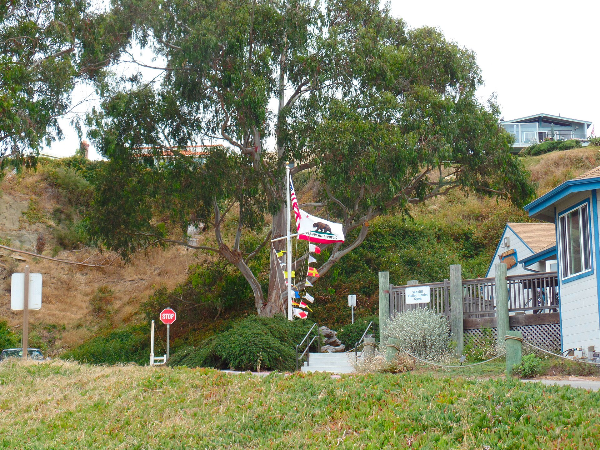
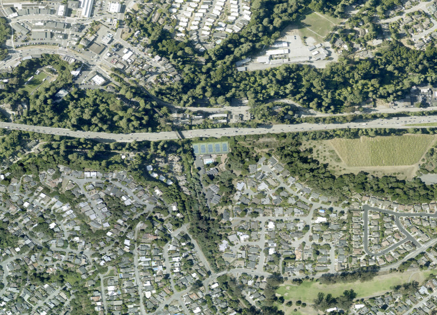
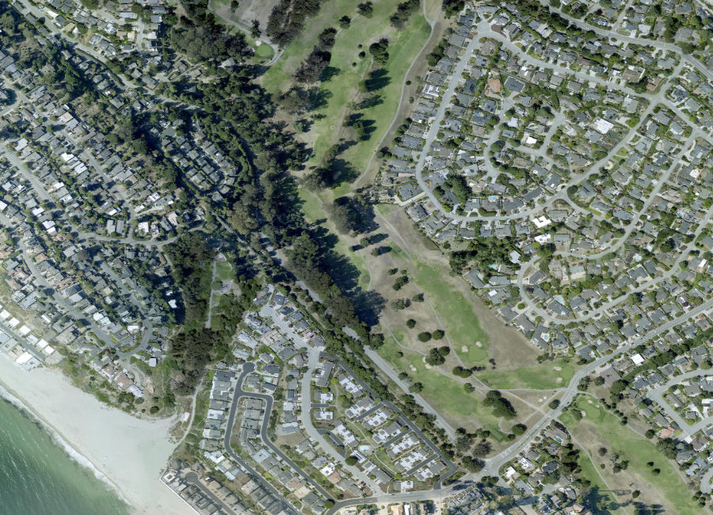
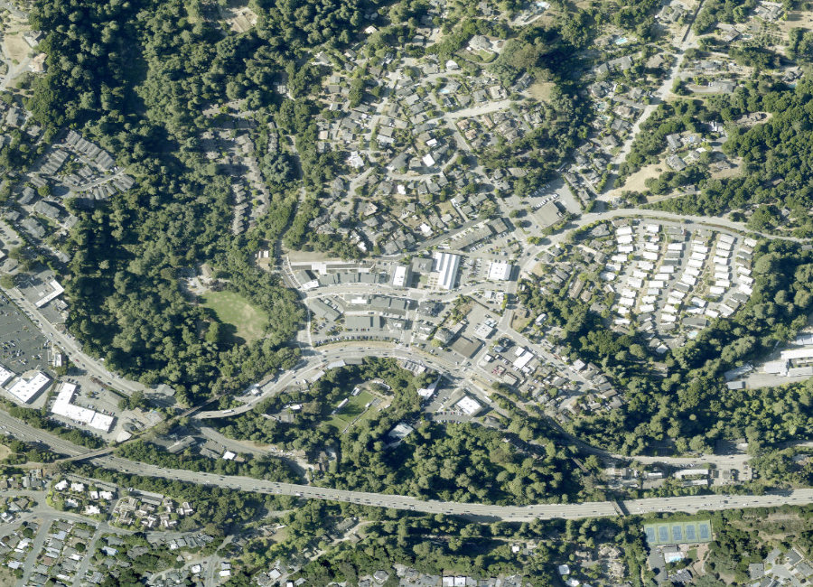

Santa Cruz County · Monterey Bay
An unincorporated community stitched together from five small villages, Aptos offers genuine small-town character along Monterey Bay — without a city hall or a single downtown to call its own. Below you'll find current homes for sale and real estate listings in Aptos, updated throughout the day, whether you're buying your first coastal home or preparing to sell into today's market.
If you'd like more information on any of these Aptos listings, just reach out — we're happy to share disclosures, recent nearby sales, and pricing history, and to walk you through anything you're curious about.
And for your convenience, feel free to register for a free account to receive alerts whenever new Aptos listings hit the market that match your criteria.
Source: Compass Market Insights, single-family homes in Aptos, July 2026 — 22 closed sales. Updated 20 August 2026. The -25% YoY figure reflects a return to more typical pricing after an unusually strong prior year, not a sudden downturn.
About the Community
Aptos has never incorporated as a city — it's governed directly by Santa Cruz County and made up of several small villages, including Seacliff, Rio del Mar, Seascape, and Aptos Village. The name comes from the Awaswas Ohlone language, likely meaning "the people" or "meeting of two streams," making it one of only three native place names still used in Santa Cruz County.
Why People Love It Here
Explore the Area

Beachfront, historic character

Coastal, family favorite

Resort-adjacent, newer homes

The community's main commercial hub
Schools
Aptos is served by the Pajaro Valley Unified School District, alongside respected private options.
History
Aptos was first home to the Awaswas-speaking Ohlone people; the name itself likely predates Spanish contact in the region. In 1833, the Mexican government granted the roughly 6,656-acre Rancho Aptos to Rafael Castro, land that later became the foundation for the villages that make up Aptos today.
In the late 1920s, developer Sam Leask built Seacliff Park and the Rio Del Mar Country Club, complete with a hotel, polo field, and golf course — and towed in the SS Palo Alto, a concrete ship, to serve as an amusement pier just offshore.
The Chen Team in Aptos
We've helped families buy and sell across Aptos's most sought-after streets. When you work with us, you get second-generation local knowledge and Compass's full resources.
// Replace with your verified production figures
Market Trends
Quarterly median sold price, single-family homes. Bars are drawn to scale from zero. Year-over-year compares Q2 2026 (65 closed sales) with Q2 2025 (53). Connect to live market data. Hover a bar for the exact figure.
Available Now
Image credits: Seacliff, Aptos, CA 18 - panoramio.jpg by Vince Migliore — CC BY 3.0, via Wikimedia Commons; PA IMGP6195 The Fishing Pier at Seacliff Beach, Aptos, CA. (7298920844).jpg by David Prasad from Fresno, CA., United States — CC BY-SA 2.0, via Wikimedia Commons.
{kind=link}
.jpg){kind=link}